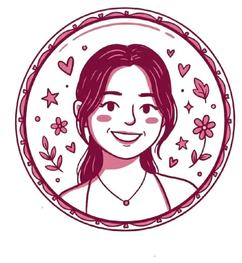

# Introduction
Hi, I'm Riya.
MS CS student at UMass Amherst with a passion for Software Engineering and Problem Solving. I enjoy creating tools that bridge the gap between technical complexity and creative design.

Education
University of Massachusetts Amherst
M.S. in Computer Science
Pune Institute of Computer Technology
B.E. in Computer Engineering
Indian Institute of Technology, Madras
B.Sc. in Programming & Data Science
Experience
Software Engineer
Barclays
- Contributed to the disaster recovery region setup for the bank's Fraud Platform on AWS, enhancing system resilience and ensuring service continuity during regional outages.
- Designed and implemented monitoring and alerting solutions using Grafana and Prometheus, improving system observability and reducing issue-detection time.
- Independently executed the complex week-long restacking workflow of Aerospike database across multiple environments.
- Developed and deployed AWS Lambda functions and CloudFormation Templates to automate infrastructure provisioning and optimize workflows across environments.
- Automated Aerospike configuration workflows using GitLab CI/CD pipelines, eliminating manual intervention and reducing configuration-related deployment errors by over 70%.
- Spearheaded the infrastructure setup and access control for a new AWS MSK cluster utilizing IAM authentication; designed scoped roles and custom alerting that enabled application teams to securely deploy isolated operations.
Summer Intern
Barclays
- Developed automated Jira governance workflows using Groovy scripts and Jenkins pipelines, reducing manual tracking efforts by more than 60%.
-Designed UI components for the Fraud Platform Dashboard using React, enhancing usability and operational visibility for internal teams.
Projects
ASKIVA: AI-Powered Academic Chatbot
Engineered an AI-enhanced academic portal utilizing LangChain and Google generative models to automate concept simplification and provide real-time, context-aware doubt resolution.
Developed a secure, full-stack architecture featuring a RAG pipeline with ChromaDB vector retrieval, Flask APIs, and role-based dashboards to deliver personalized academic workflows.
Data-Driven Business Performance Analysis
Analyzed complex operational, financial, and feedback datasets using statistical modeling and multi-chart visualizations to identify irregular payment cycles, high-demand SKUs, and service pain points.
Leveraged turnover metrics and sentiment analysis to propose data-driven strategies for inventory optimization and policy improvements, directly enhancing overall operational efficiency.
Legal Document Understanding & Query Assistant
Engineered an end-to-end legal tech platform featuring large-document text extraction, clause segmentation, and a MongoDB-backed versioning system to highlight document changes and simplify contract navigation.
Developed semantic search and QA features using advanced retrieval techniques (NLP/LLMs) to handle complex domain terminology, while co-authoring a survey paper on contemporary legal-document processing methods.
Reducing Hallucinations through Enhanced Retrieval-Augmented Generation Pipelines
Developed a custom RAG pipeline using Ollama and FAISS/ChromaDB, implementing semantic search, reranking, and query reformulation to systematically reduce LLM hallucinations.
Engineered advanced chunking and confidence scoring strategies across diverse document formats, achieving 94% accuracy and less than 2% hallucination rate over a benchmark of 250+ queries.
BookVista: Library Management System
Developed BookVista, a responsive, full-stack e-book management platform built with Vue 3, Bootstrap, and Flask to streamline e-book search, distribution, request workflows, and user feedback.
Implemented secure JWT authentication with role-based access control (RBAC), and designed a Celery-Redis background task pipeline for automated daily email reminders and real-time dashboard analytics powered by Chart.js.
Let's connect!
I'm always open to discussing